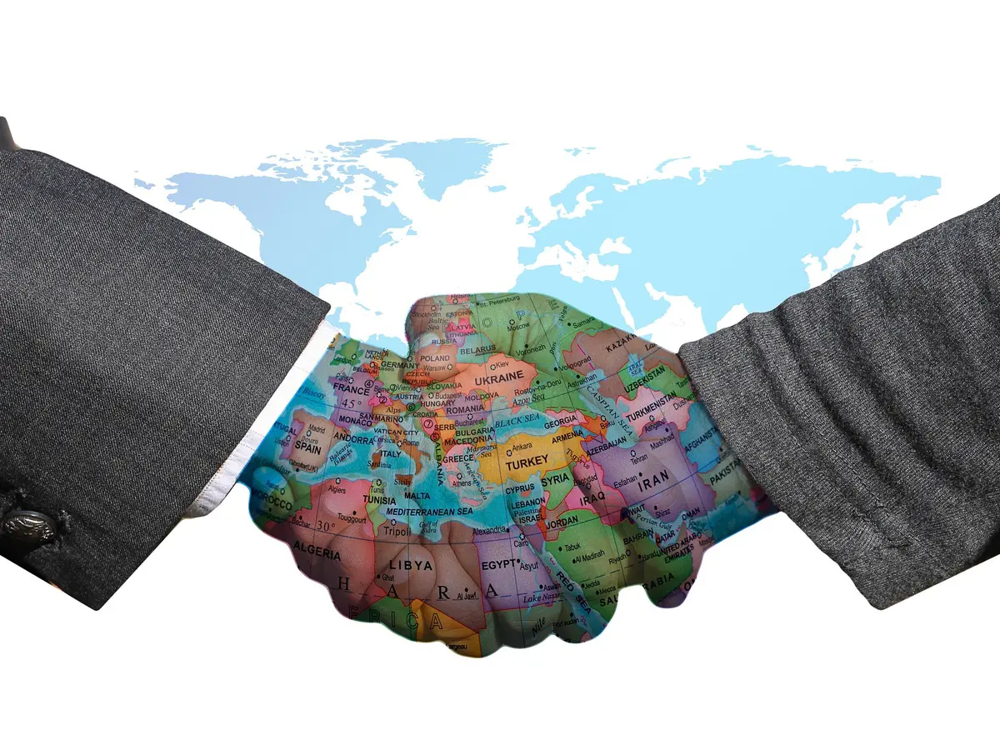
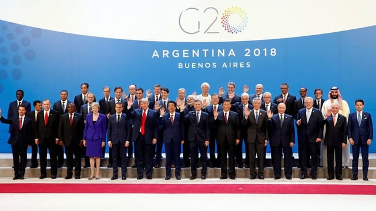
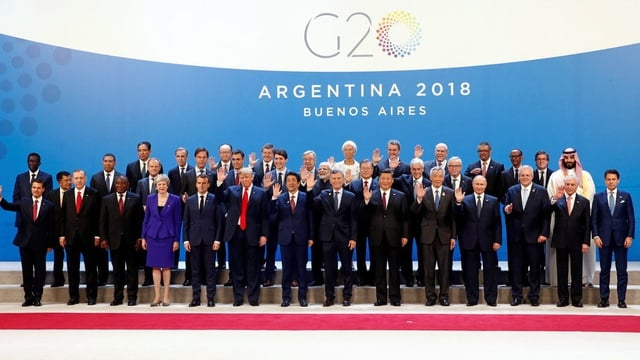

 

Kerja sama adalah suatu usaha bersama untuk mencapai tujuan bersama yang bermanfaat bagi semua pihak yang terlibat. Sebagai makhluk sosial, manusia dengan kekurangan dan kelebihannya masing - masing tentu saja membutuhkan orang lain untuk melengkapi kebutuhan mereka, sehingga kerja sama menjadi hal yang sangat penting dan sering dilakukan dalam kehidupan sehari - hari. Sejak dini, kita telah diajarkan untuk kerja sama dalam kegiatan sederhana agar dapat beradaptasi dengan lingkungan sosial di masa depan. Dengan melatih sejak dini juga membantu mereka mengerti peran masing - masing dalam kerja sama tersebut sehingga tidak ada yang terlantarkan.
Kerja sama pastinya tidak hanya dilakukan dalam kehidupan kita sehari - hari, tetapi juga dalam tingkat yang lebih luas, yaitu hubungan antar negara. Negara - negara sering menjalin kerja sama untuk saling melengkapi kebutuhan ekonomi, sosial, budaya, pendidikan, dan masih banyak lagi. Kerja sama ini juga membantu menjalin persahabatan antar negara dan memperkuat perdamaian sehingga tidak terjadi lagi konflik seperti pada masa lalu. Misalnya, kerja sama dalam perdagangan internasional bertujuan menciptakan pertumbuhan ekonomi yang saling menguntungkan. Selain itu, negara - negara juga bekerja sama untuk menghadapi tantangan global, seperti kemiskinan, perubahan iklim, dan perdamaian dunia. Dalam hubungan antar negara ada 4 macam kerja sama; kerja sama bilateral, kerja sama regional, kerja sama multilateral, internasional.